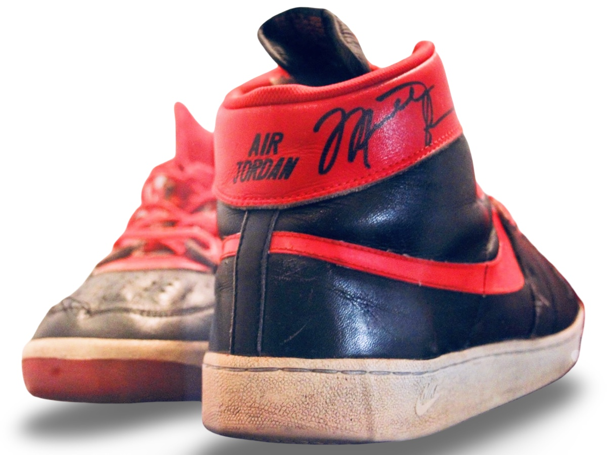
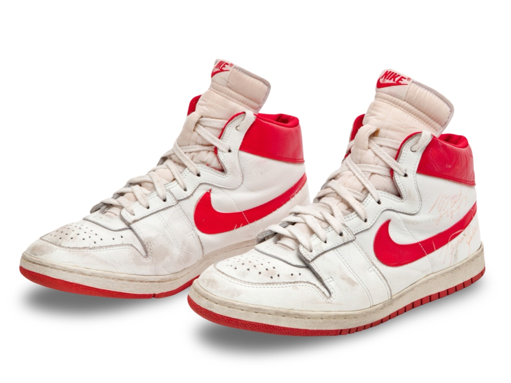
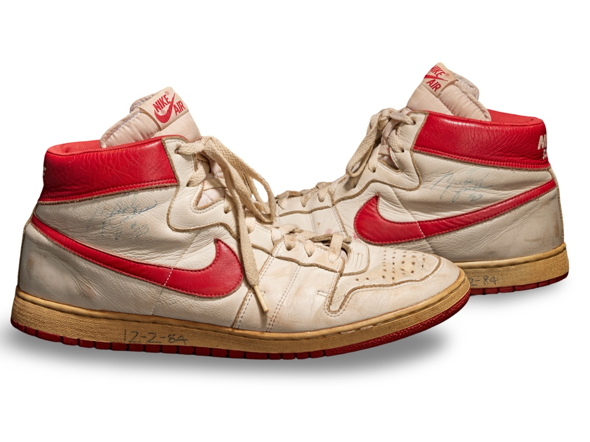
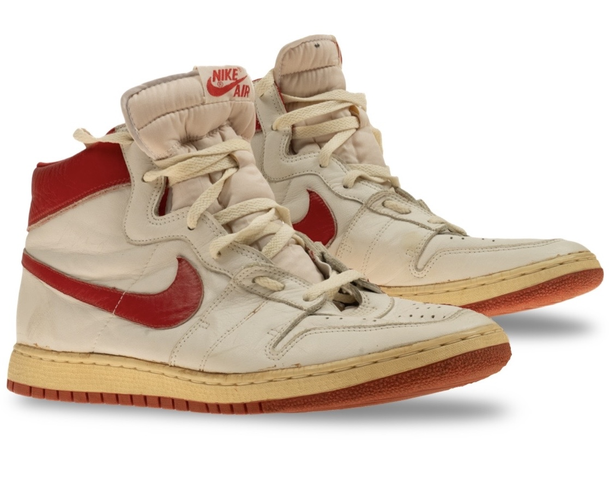

Nike Air Ship
Verification Summary
| Method | Count | Public | Private | Status |
|---|---|---|---|---|
| Photo Matched | 4 | 3 | 1 | ⏳ |
| Coding Verified | 0 | 0 | 0 | ⏳ |
Unlike jerseys, footwear is documented by model, use, and method of verification rather than population accounting.
MODEL OVERVIEW

Documented Nike Air Ship example associated with Michael Jordan’s earliest professional footwear use.
Early examples reflect initial professional use and provide context for the evolution of Jordan’s footwear into the Air Jordan line.
Methodology & Identification
Footwear identification within the archive extends beyond direct visual comparison. Analysis incorporates model chronology, production coding, material behavior, and player-specific wear patterns observed across game imagery and surviving examples.
Particular attention is given to structural deformation during use, including creasing patterns, lace tension habits, and outsole or midsole stress responses resulting from Jordan’s movement and play style.
Final identification is determined through the convergence of these characteristics rather than any single matching detail.
1984 NIKE AIR SHIP "AIR JORDAN" - SAMPLE


Photo-matched Nike Air Ship sample worn during preseason.
Privately Held
Photo Match Details
Research & Provenance
- First known pair to be worn by Michael Jordan.
- A sample version of the Nike Air Ship featuring "AIR" branding and a Nike "Pro Circuit" Tennis shoe outsole and a modified ankle cut to meet requested specifications.
- Internally photo-matched within the archive.
1984 NIKE AIR SHIP - SAMPLE

Photo-matched Nike Air Ship example attributed to 11-01-4 vs. Denver.
Public Sale
Photo Match Details
Research & Provenance
- A sample pair of the Nike Air Ship with only "AIR" branding on back heel tab instead of "NIKE AIR".
- Documented as one of the first pairs worn to start Michael Jordans career.
- Originally sold as unmatched, archive research assisted in the first documented photo-match.
- Internal visual confirmation and research is held within the archive for additional game data points.
- Independent archive research confirms this pair aligns as the first pair used in Jordan's first pro NBA game.
1984 NIKE AIR SHIP

Photo-matched Nike Air Ship example attributed to 11-29-4 vs. Phoenix.
Public Sale
Photo Match Details
Research & Provenance
- Associated with the opening portion of the 1984–85 rookie season.
- Precedes Michael Jordan’s transition into the Air Jordan 1.
- Classification supported through visual comparison and model chronology.
1984 NIKE AIR SHIP

Photo-matched Nike Air Ship example attributed to 1984.
Public Sale
Photo Match Details
Research & Provenance
- Associated with the opening portion of the 1984–85 rookie season.
- A multiple game photo verified match has been made using our archive images
- Independently photo-matched within the archive and held privately to protect our verified research.